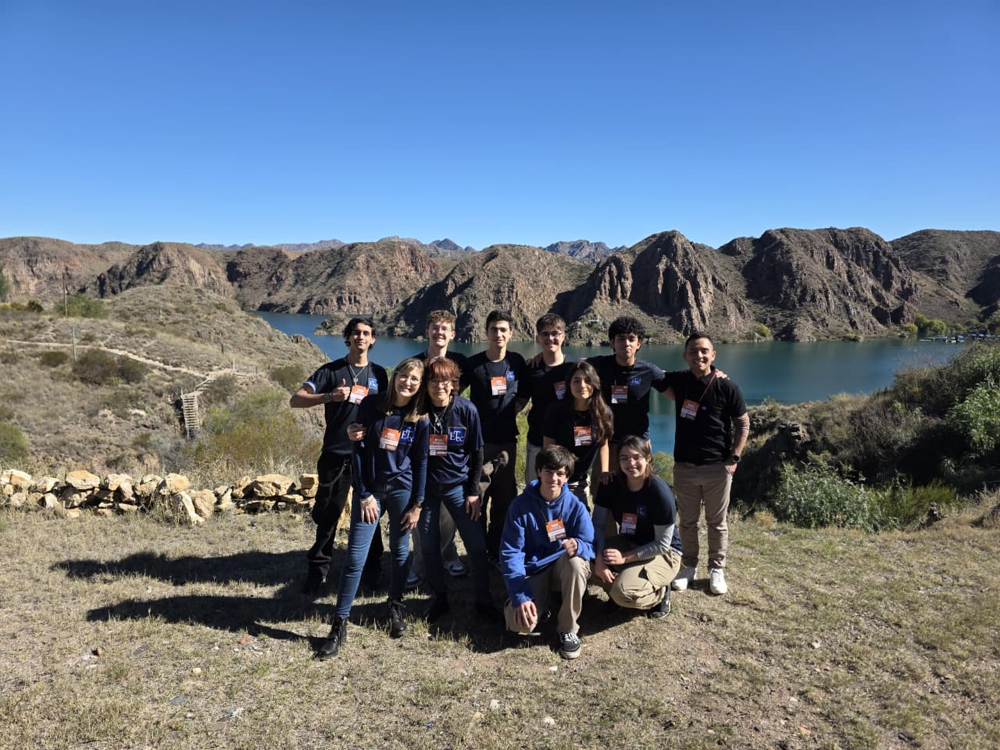
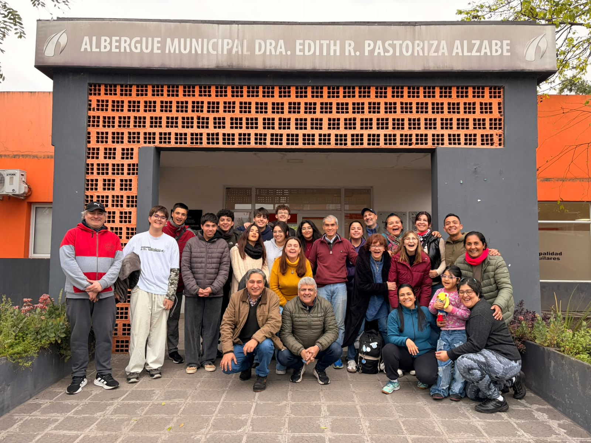
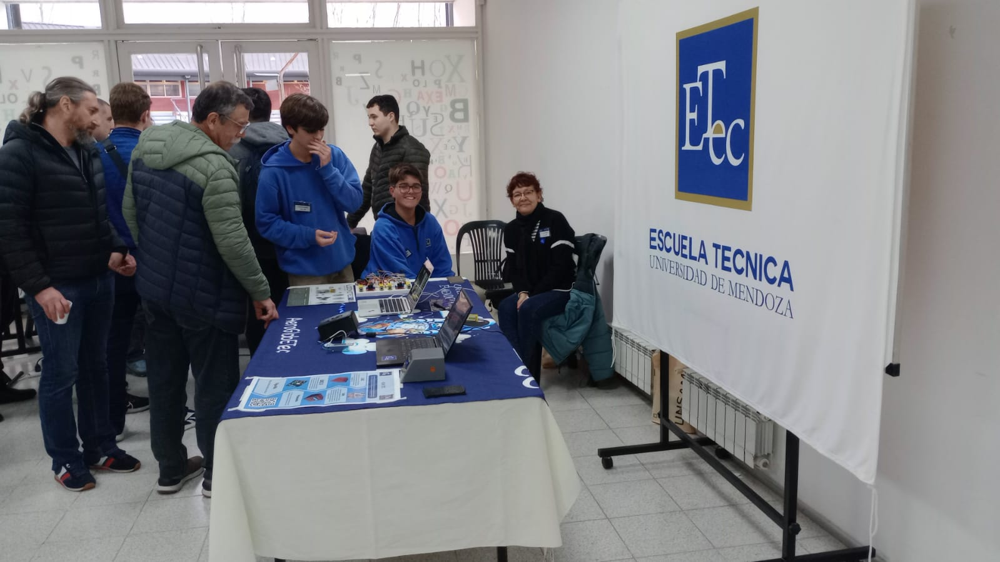
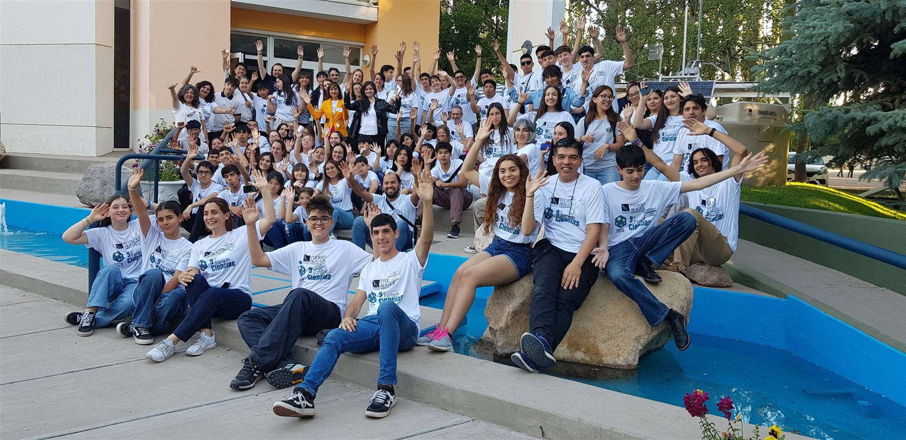

2026
SASE
Simposio Argentino de Sistemas Embebidos. Mención especial con VitisGuard.
Argentine Symposium on Embedded Systems. Special mention for VitisGuard.
InicioHome / TrayectoriaBackground
Dónde estudio, qué cursos hice, en qué eventos estuve y qué herramientas manejo.
Where I study, the courses I've taken, events I've attended and the tools I use.
FormaciónEducation
ReconocimientosAwards
CursosCourses
Eventos y participacionesEvents

Simposio Argentino de Sistemas Embebidos. Mención especial con VitisGuard.
Argentine Symposium on Embedded Systems. Special mention for VitisGuard.


Simposio Argentino de Sistemas Embebidos. 1.er puesto con la REM y 2.º puesto con Acceso 4.0.
Argentine Symposium on Embedded Systems. 1st place with REM and 2nd place with Acceso 4.0.

Simposio Argentino de Sistemas Embebidos. 2.º premio con la estación meteorológica.
Argentine Symposium on Embedded Systems. 2nd prize with the weather station.

9.ª Feria de Ciencias del Observatorio Pierre Auger.
9th Science Fair of the Pierre Auger Observatory.
HabilidadesSkills